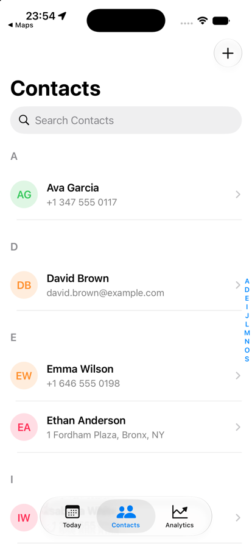
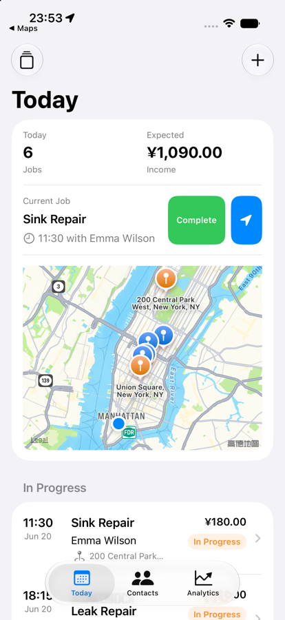
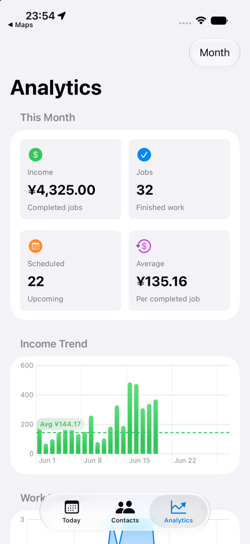
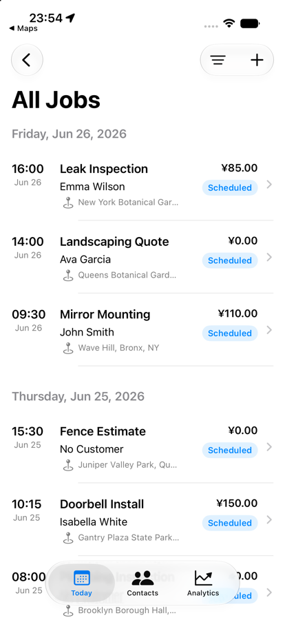
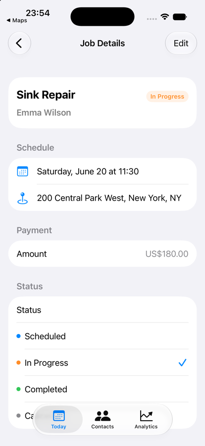
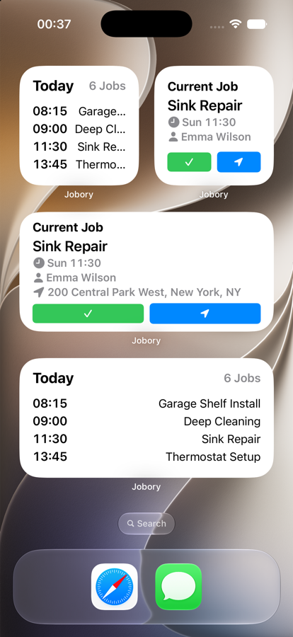
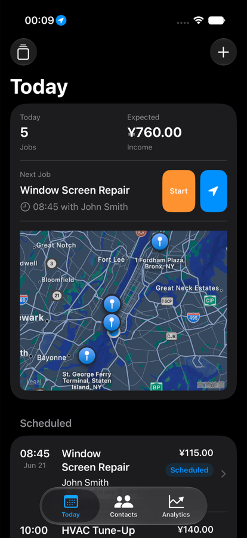

Customer records
Save names, phone numbers, addresses, notes, job history, and customer tags for repeat work.
Built for independent contractors
Manage customers, jobs, routes, reminders, and income from one focused iPhone app for solo service professionals and small field teams.



Jobory keeps the operational pieces of your workday close together, so you can move from planning to service to follow-up without juggling notes, maps, and spreadsheets.
Save names, phone numbers, addresses, notes, job history, and customer tags for repeat work.
Create jobs with customer, time, address, price, notes, and status, then review the day at a glance.
See today's work locations on a map and start navigation when it is time to head out.
Track monthly revenue, completed jobs, average job value, and recent income trends.
Prepare for upcoming jobs with simple reminders for appointments and departure timing.
Designed around quick job creation, with room for AI-assisted entry as the product grows.
A simple workflow for cleaners, handymen, electricians, plumbers, painters, landscapers, mobile car wash operators, and repair professionals.
Keep contact details, service address, tags, and notes in a reusable profile.
Record time, location, service type, price, and status before the workday starts.
Review today's list and map view so the next stop is always clear.
Use trends and totals to understand how the month is going.
Jobory turns your work list, customer records, job details, income trends, and widgets into calm screens that are easy to scan between appointments.
See the day, income, and job queue at a glance.

Review upcoming and past work in one place.

Keep every appointment's core details together.
Find customers quickly before scheduling repeat work.
Track income, completed jobs, and work volume trends.

Check the next job from the Home Screen.

Use the same focused workflow at night.
Jobory focuses on people who earn through appointments, addresses, repeat customers, and completed work.
Questions about Jobory, billing, data, or setup? The support page has the fastest path.